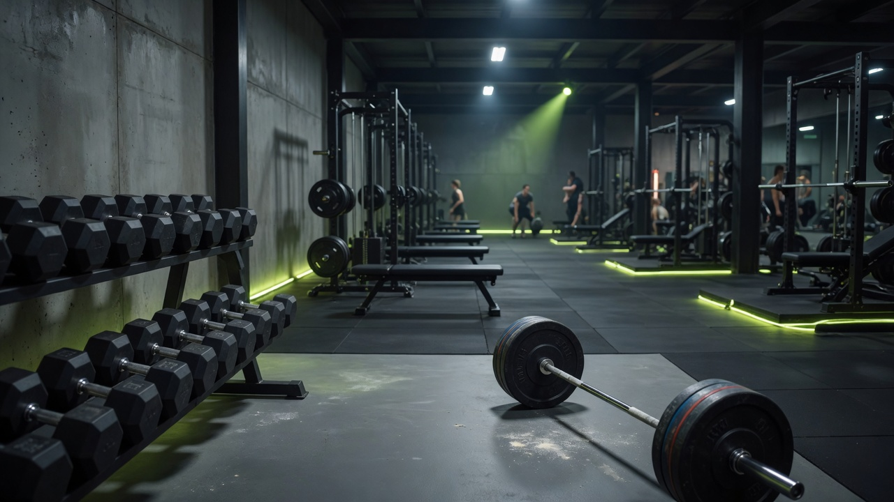
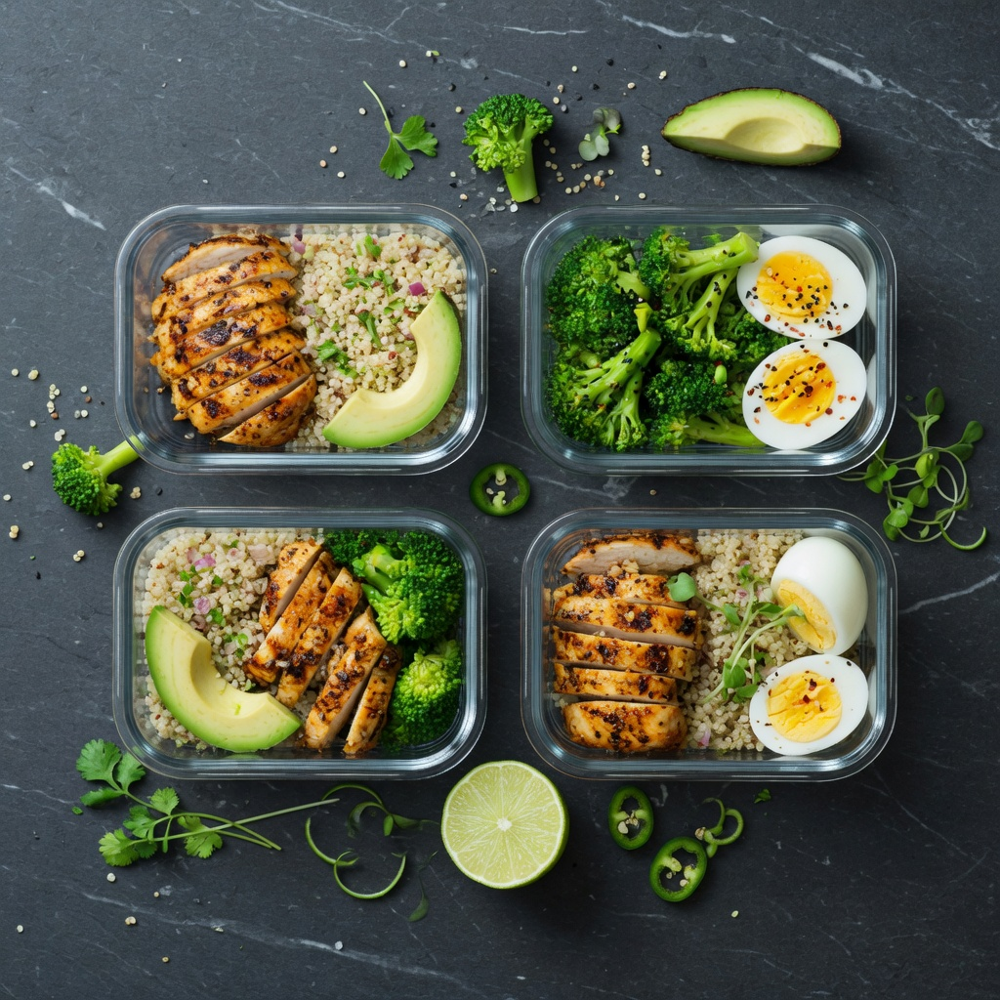

Bodybuilding
Allenamento con i pesi per forza, ipertrofia e controllo corporeo. La base di tutto.
Forza · Massa · Disciplina «Costruire il corpo insegna a costruire la mente.»
Da oltre 15 anni il fitness non è un hobby passeggero per me — è parte della mia identità. Bodybuilding, corsa, bici da corsa e sport outdoor mi hanno insegnato la stessa lezione che applico nel lavoro: costanza, metodo e pazienza battono sempre l'intensità sporadica.
La mia filosofia è semplice: equilibrio, costanza e allenamento intelligente. Niente scorciatoie, niente estremismi — solo un percorso sostenibile verso salute e performance a lungo termine.
Pratico bodybuilding per forza e composizione corporea, corsa su strada e bici da corsa per cardio e resistenza, e sport outdoor per restare connesso alla natura. Ogni disciplina aggiunge qualcosa: potenza, endurance, mobilità, mentalità.
Interesse profondo per nutrizione sportiva, performance e salute metabolica. Alimentazione pulita, idratazione, sonno e recupero — non sono dettagli secondari, sono il 50% del risultato.
Domande su allenamento, nutrizione, proteine o recupero? Il bot conosce le guide di questa sezione e risponde in modo immediato.

Ho sviluppato conoscenze solide di nutrizione sportiva attraverso anni di sperimentazione personale, studio e applicazione pratica. Gestisco piani alimentari per obiettivi concreti con un approccio evidence-based.
Focus principali:
Passione per la divulgazione fitness: condivido ciò che funziona davvero, senza hype da integratore miracoloso o dieta della settimana.
Allenamento con i pesi per forza, ipertrofia e controllo corporeo. La base di tutto.
Forza · Massa · Disciplina «Costruire il corpo insegna a costruire la mente.»Running per cardio, resistenza mentale e libertà. Nessun attrezzo, solo costanza.
Cardio · Endurance · Focus «Ogni km è una vittoria contro la pigrizia.»Ciclismo su strada per gambe potenti, polmoni efficienti e lunghi percorsi.
Potenza · Resistenza · Esplorazione «La strada è il mio secondo gym.»Movimenti composti, mobilità e forza applicata alla vita reale.
Mobilità · Agilità · Prevenzione «Allenarsi per vivere meglio, non solo per apparire.»Trekking, trail, natura — il fitness non deve stare solo in palestra.
Benessere · Natura · Equilibrio «Il corpo funziona meglio quando respira aria vera.»Contenuti educativi basati su esperienza reale e principi scientifici.
Principi base dell'ipertrofia: stimolo meccanico progressivo, volume adeguato (10–20 serie/settimana per gruppo muscolare), frequenza 2x/settimana per i principali distretti.
Allenamento progressivo: aumenta carico, ripetizioni o volume nel tempo. Il sovraccarico progressivo è la regola d'oro — senza progressione, niente crescita.
Riposo e recupero: 7–9 ore di sonno, giorni di scarico, gestione dello stress. I muscoli crescono quando riposi, non quando ti alleni.
Alimentazione ipercalorica pulita: surplus calorico moderato (+300–500 kcal), cibi integrali, proteine a ogni pasto. Surplus non significa junk food.
Proteine: 1,6–2,2 g per kg di peso corporeo al giorno, distribuite in 4–5 pasti. Fondamentali per sintesi proteica e recupero.
Equilibrio calorico: non serve essere in deficit o surplus tutto l'anno. Fasi di mantenimento (TDEE) sono la chiave per restare in forma senza yo-yo.
Macronutrienti: proteine stabili (1,8–2 g/kg), grassi buoni (0,8–1 g/kg), carboidrati variabili in base all'attività. Flessibilità, non rigidità estrema.
Idratazione: 2–3 litri d'acqua al giorno, di più con cardio intenso o caldo. Spesso sottovalutata, sempre fondamentale.
Pasti semplici e sostenibili: meal prep, cibi veri, leggere etichette. La dieta migliore è quella che riesci a seguire per anni, non per settimane.
Effetti metabolici negativi: zucchero raffinato apporta calorie vuote senza nutrienti. Eccesso cronico è associato a resistenza insulinica e accumulo di grasso viscerale.
Infiammazione: picchi glicemici ripetuti possono favorire stato infiammatorio di basso grado — nemico di recupero e salute generale.
Picchi glicemici: energia rapida seguita da crollo — fame, irritabilità, craving. Un ciclo che sabotage energia e composizione corporea.
Alternative sane: frutta fresca, miele crudo con moderazione, dolcificanti naturali, dark chocolate 85%+. Leggere le etichette: lo zucchero si nasconde ovunque.
Tipi: whey (assorbimento rapido, post-workout), caseine (rilascio lento, pre-nanna), proteine vegetali (pisello, riso, soia) per chi evita latticini.
Quando usarle: non sostituiscono pasti interi — integrano quando non raggiungi il fabbisogno proteico con il cibo. Post-workout o spuntini proteici sono i momenti ideali.
Quantità: 20–40 g per serving, 1–2 shake al giorno se necessario. Il totale giornaliero conta più del timing perfetto.
Benefici per chi si allena: comodità, recupero muscolare, mantenimento massa in deficit calorico. Strumento utile, non magia.
Il fitness non è una destinazione — è un sistema. Costanza batte intensità. Disciplina batte motivazione. E la salute a lungo termine batte qualsiasi fisico temporaneo.
— Stefano Davide Ciancimino